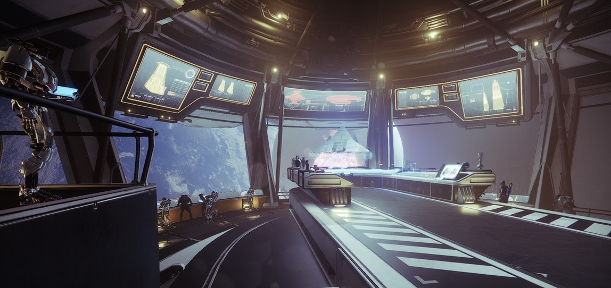
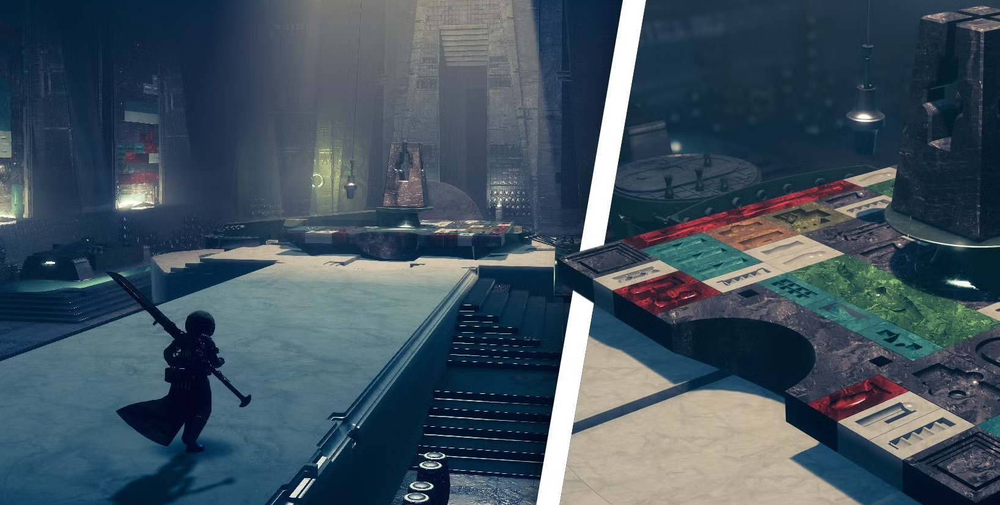
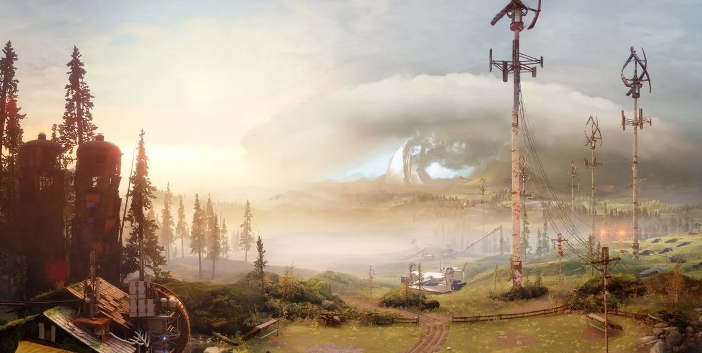
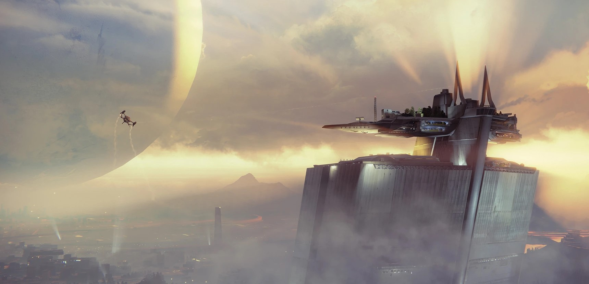
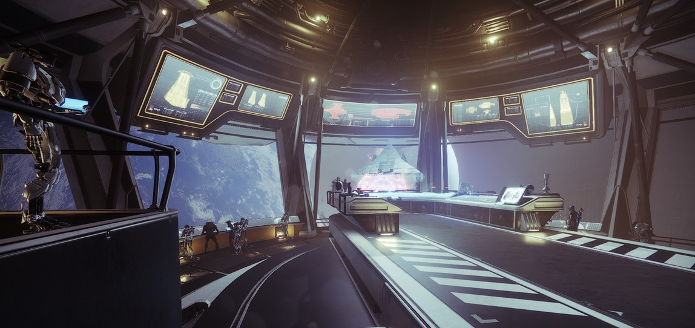
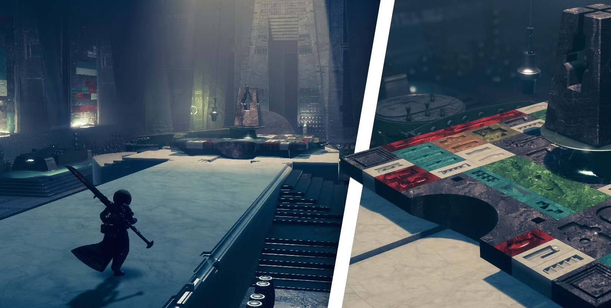
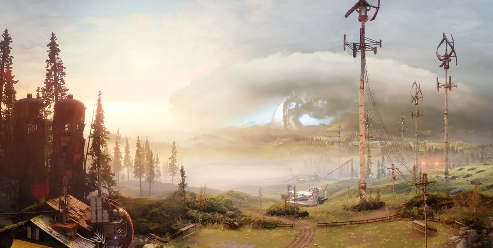

수호자의 본부이자 최후의 도시를 내려다보는 거대한 성채. 경이 상인 자발라,
용사단장 샤크스, 그리고 암시장 중개인 스파이더가 이곳에서 수호자를
지원한다. 드넓은 접견실과 행정 관저, 그리고 ‘이케라스 포지’가 위치해
있어 장비 인퓨징과 경이 장비 조율을 한 번에 처리할 수 있다. 전투 임무
사이 휴식과 사교 활동의 중심지로, 공용 볼륨 채팅과 춤 배틀, 구기
미니게임(축구, 농구)이 자주 열려 캐주얼 소셜 경험을 제공한다.
헬름

‘Hub for Emergency Logistics and Maneuvers’의 약칭으로, 궤도상에 떠 있는
전략 사령부. 시즌별 작전실, 우주망 연구소, 해독실 등이 모듈 형태로
교체되며 최신 전장 뉴스와 즉시 연결된다. 움브라 해독기와 시즌 장비
업그레이더, 스토리 NPC 지휘관들이 배치돼 있어 매주 반복 파밍 동선을
간결하게 만들어 준다. 내부 도킹 베이에서는 이국적인 우주선 전시회가
진행되고, 주간 퀘스트 NPC 간담회를 통해 추가 경험치 부스트를 받을 수
있다.
거주지 구역

최후의 도시 내부에 조성된 다문화 거주지. 인류, 엘릭스니, 카발 난민이
함께 생활하며, 거리 공연과 노천 시장, 공공 작업장이 활기를 더한다.
매주 교대하는 ‘커뮤니티 베네핏’ 이벤트에서 기부 포인트를 모으면 시즌
장식 아이템과 사회적 버프(경험치 +10%)를 획득할 수 있다. 엘릭스니
구역에서는 미니 게임 ‘에테르 채집’이 가능하며, 카발 조리사 스토커스의
‘전투 급식’ 퀘스트를 통해 특제 버프 음식을 제작할 수 있다.
농장

지구 EDZ 외곽에 위치한 한적한 농장형 쉼터. 초기 붉은 전쟁 난민 캠프
역할을 했으나, 현재는 수호자의 비밀 인디 게임 토너먼트와 낚시 대회가
개최되는 여가 공간으로 재탄생했다. 4인 협동 미니게임 ‘축구 리매치’와
주간 낚시 랭킹 보드, NPC 호손의 필드 공급 임무가 있어 소규모 클랜
모임에 적합하다. 붕괴된 시계탑을 오르는 ‘파쿠르 타임어택’은
커뮤니티 속도 경쟁 콘텐츠로 인기를 끈다.


주요 목적지
탑
수호자의 본부이자 최후의 도시를 내려다보는 거대한 성채. 경이 상인 자발라, 용사단장 샤크스, 그리고 암시장 중개인 스파이더가 이곳에서 수호자를 지원한다. 드넓은 접견실과 행정 관저, 그리고 ‘이케라스 포지’가 위치해 있어 장비 인퓨징과 경이 장비 조율을 한 번에 처리할 수 있다. 전투 임무 사이 휴식과 사교 활동의 중심지로, 공용 볼륨 채팅과 춤 배틀, 구기 미니게임(축구, 농구)이 자주 열려 캐주얼 소셜 경험을 제공한다.
헬름
‘Hub for Emergency Logistics and Maneuvers’의 약칭으로, 궤도상에 떠 있는 전략 사령부. 시즌별 작전실, 우주망 연구소, 해독실 등이 모듈 형태로 교체되며 최신 전장 뉴스와 즉시 연결된다. 움브라 해독기와 시즌 장비 업그레이더, 스토리 NPC 지휘관들이 배치돼 있어 매주 반복 파밍 동선을 간결하게 만들어 준다. 내부 도킹 베이에서는 이국적인 우주선 전시회가 진행되고, 주간 퀘스트 NPC 간담회를 통해 추가 경험치 부스트를 받을 수 있다.
거주지 구역
최후의 도시 내부에 조성된 다문화 거주지. 인류, 엘릭스니, 카발 난민이 함께 생활하며, 거리 공연과 노천 시장, 공공 작업장이 활기를 더한다. 매주 교대하는 ‘커뮤니티 베네핏’ 이벤트에서 기부 포인트를 모으면 시즌 장식 아이템과 사회적 버프(경험치 +10%)를 획득할 수 있다. 엘릭스니 구역에서는 미니 게임 ‘에테르 채집’이 가능하며, 카발 조리사 스토커스의 ‘전투 급식’ 퀘스트를 통해 특제 버프 음식을 제작할 수 있다.
농장
지구 EDZ 외곽에 위치한 한적한 농장형 쉼터. 초기 붉은 전쟁 난민 캠프 역할을 했으나, 현재는 수호자의 비밀 인디 게임 토너먼트와 낚시 대회가 개최되는 여가 공간으로 재탄생했다. 4인 협동 미니게임 ‘축구 리매치’와 주간 낚시 랭킹 보드, NPC 호손의 필드 공급 임무가 있어 소규모 클랜 모임에 적합하다. 붕괴된 시계탑을 오르는 ‘파쿠르 타임어택’은 커뮤니티 속도 경쟁 콘텐츠로 인기를 끈다.
허브별 빠른 이용 가이드